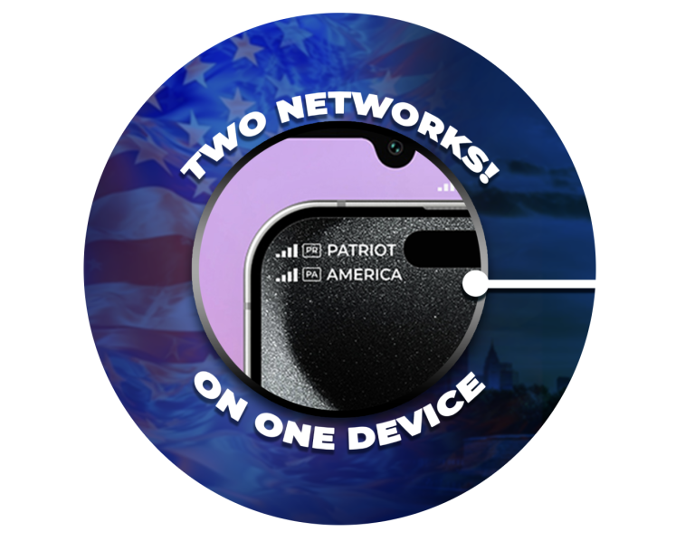
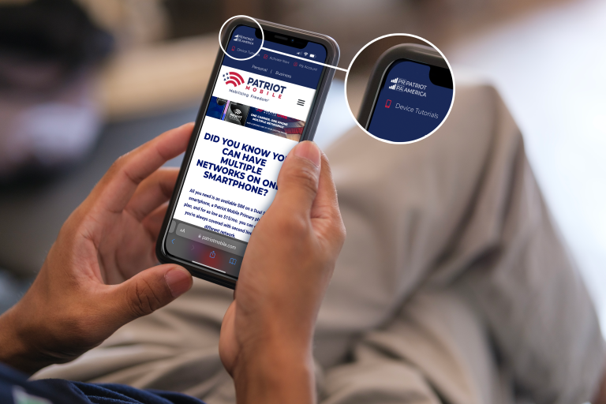

Why you need Patriot Mobile One
BACKUP LINE
Network towers can sometimes go down, and having a second line on a different network can help increase the likelihood of staying connected.
FREQUENT TRAVELER
Stay connected when you travel to remote locations where a particular network may not have coverage.
WORK AND PERSONAL
No need to carry two phones; combine your work and personal number into one device.
STAY CONNECTED
Having a second line minimizes the chance that you will be without use of your cell phone, giving you peace of mind.
SMALL BUSINESS OWNER
Effectively handle client calls using separate business lines, eliminating the need for two phones.
EMERGENCY SITUATIONS
Stay connected during crisis situations; having a backup line may save someone’s life.

Patriot Mobile is one of the only carriers that can offer you three different networks. Two networks can be on one device.
Patriot Mobile One is One Carrier, One Phone, Multiple Networks:
- Add a second line to your eSIM-compatible smartphone.
- Ideal for separating work and personal calls or texts.
- Manage privacy effectively with a dedicated number.
- Eliminate the need for multiple devices, reducing cost and clutter.
Two Networks, One phone:
- Access two different networks simultaneously on one device.
- Ensure consistent and reliable coverage, in rural areas.
- Allows cellular data switching. Use data from both data plans when needed.
One Phone, One Carrier, Multiple Networks
Dual SIM smartphones allow you to use two SIM cards simultaneously, either eSIM or hard SIM.
With Patriot Mobile One, not only can you have a second number, but that
number
can be on on a different network. This can be useful for managing network coverage issues
when
traveling the country or for using personal and business lines on the same
device.
Patriot Mobile’s got you covered as one of the only cell phone carriers
to
provide all three major networks!

Frequently Asked Questions
What is Patriot Mobile One (PMO)?
Patriot Mobile is one of the only wireless Carriers that
offers three
different
networks. PMO allows you to have two numbers with access to two networks on a single dual-SIM
smartphone. This service combines work and personal numbers on one phone, doubles coverage
options,
and ensures connectivity in rural or remote areas.
How do I set up my second number or network with PMO?
If your device supports dual SIMs with eSIM technology, call
972-PATRIOT and
add
a second line starting at $15 monthly. You can activate your second line directly from your
device
settings.
Who can benefit from using PMO?
PMO is perfect for professionals who need separate lines for
work and
personal
use, individuals who require reliable coverage in various locations, and travelers who need
consistent connectivity across different networks.
Are there specific devices that are compatible with PMO?
PMO is compatible with any smartphone with dual SIM
functionality, including
eSIM technology. Popular compatible devices include the latest Apple, Samsung, and Google
models.
Please check your device specifications to confirm compatibility.
How much does PMO cost?
Pricing for PMO starts at $15 per month for the additional
line. This fee
allows
you to access the second number or network without needing a separate physical SIM card. Note
talk,
text, and data charges may apply based on your plan choice.
Can I manage both lines separately?
Yes, with PMO, you can manage both lines independently. Each
line can have
its
own data plan and settings for calls, texts, and data usage. Click here to watch a short video on
how to use PMO.
What happens if I travel internationally with PMO?
PMO can be a great asset when traveling internationally. You
can switch
between
networks to leverage local carriers, potentially saving on roaming fees. Be sure to check
international rates and network compatibility before you travel.
How do I switch between numbers or networks on PMO?
Switching between numbers or networks is managed through
your phone’s
settings.Click here to watch a short
video
on how to use PMO.
What support is available for PMO users?
Click
here to
watch a
short video on how to use PMO or call member services at 972-PATRIOT